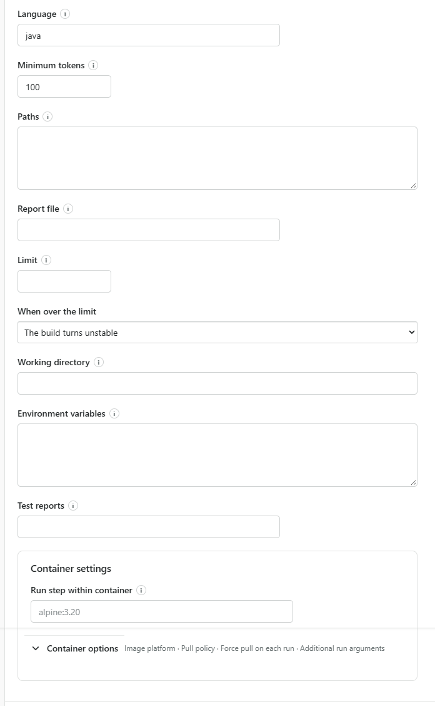

Duplicates finder
Runs the PMD copy-paste detector (pmd cpd) or reads its report, and lists the duplicate blocks on the build.
When to use it
Use it to find copy-pasted code in your game scripts before it spreads. It needs PMD 7 on the agent if the step runs the tool itself.
How to set it up
- Open the build configuration and click Settings › Build Steps.
- Click Add build step. Type
Duplicates finderin Filter step types if you like, then click the Duplicates finder tile (group Code quality and coverage). - Type a Step name, for example
Find duplicates. - Fill in the fields described below.
- Optional: set Execute step, Conditions and Retry on failure. See The steps list and the step editor.
- Click Save.

Every field
| Field | What it does | Default | Example |
|---|---|---|---|
| Language | The PMD language name, for example java, cs, javascript, python, kotlin. | java | cs |
| Minimum tokens | Blocks shorter than this many tokens are not reported. | 100 | 150 |
| Paths | Folders or files to search, one per line, relative to the working directory. Runs pmd cpd, which must be on the agent. Leave empty to only read a report an earlier step wrote. | Empty | Assets/Scripts |
| Report file | Used when Paths is empty: an Ant pattern of PMD CPD XML files inside the workspace. A path that leaves the workspace is refused. | Empty | reports/cpd.xml |
| Limit | Optional. The step is worse when it finds more duplicate blocks than this number. Empty means no limit. | Empty | 20 |
| When over the limit | The build turns unstable or The step fails. | The build turns unstable | The build turns unstable |
| Working directory, Environment variables, Test reports, Run step within container | The same in every runner. See Fields every runner has. |
A worked example
Search the Unity scripts for duplicates. Step name Find duplicates, Language cs, Minimum tokens 150, Paths Assets/Scripts, Limit 20.
What you see when it runs
The console shows the pmd cpd command and Found 7 duplicate blocks. The build page lists the blocks, with lines and tokens: 7 duplicate blocks, 212 duplicated lines, largest block 340 tokens.
Problems and fixes
| Problem | What to do |
|---|---|
| The pmd command was not found on this agent | Install PMD 7 or put pmd on the PATH. |
| The Duplicates finder step has no paths to search | Fill in Paths (or a Report file to read). |